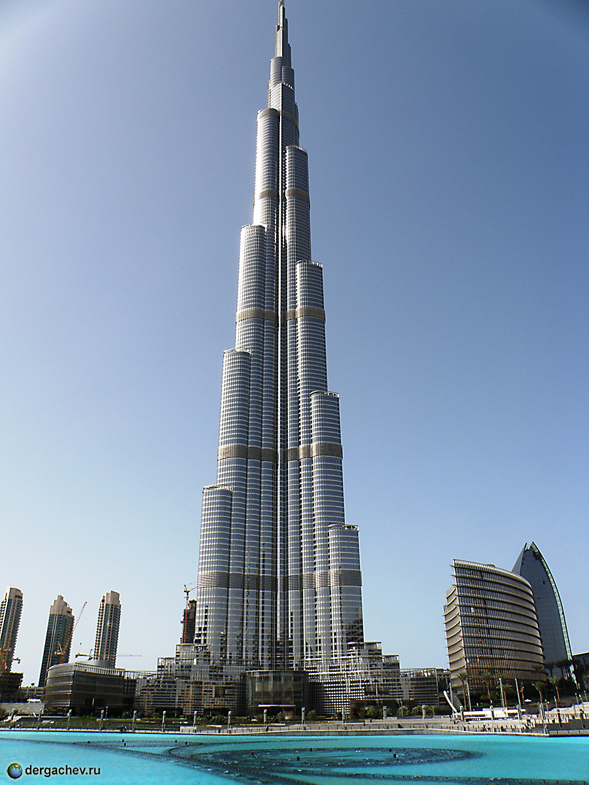

The Burj Khalifa (Arabic: برج خليفة, Arabic pronunciation: [bʊrd͡ʒ xaˈliːfa]; pronounced English: /ˈbɜːrdʒ kəˈliːfə/, literally "Khalifa Tower" in English), known as the Burj Dubai prior to its inauguration in 2010, is a skyscraper in Dubai, United Arab Emirates. With a total height of 829.8 m (2,722 ft, just over half a mile) and a roof height (excluding antenna, but including a 244 m spire) of 828 m (2,717 ft), the Burj Khalifa has been the tallest structure and building in the world since its topping out in 2009 (preceded by Taipei 101).
Construction of the Burj Khalifa began in 2004, with the exterior completed five years later in 2009. The primary structure is reinforced concrete. The building was opened in 2010 as part of a new development called Downtown Dubai. It is designed to be the centrepiece of large-scale, mixed-use development. The decision to construct the building is based on the government's decision to diversify from an oil-based economy, and for Dubai to gain international recognition. The building was originally named Burj Dubai but was renamed in honour of the ruler of Abu Dhabi and president of the United Arab Emirates, Khalifa bin Zayed Al Nahyan; Abu Dhabi and the UAE government lent Dubai money to pay its debts. The building broke numerous height records, including its designation as the tallest building in the world.

Burj Khalifa was designed by Adrian Smith, of Skidmore, Owings & Merrill, whose firm designed the Willis Tower and One World Trade Center. Hyder Consulting was chosen to be the supervising engineer with NORR Group Consultants International Limited chosen to supervise the architecture of the project. The design is derived from the Islamic architecture of the region, such as in the Great Mosque of Samarra. The Y-shaped tripartite floor geometry is designed to optimize residential and hotel space. A buttressed central core and wings are used to support the height of the building. Although this design was derived from Tower Palace III, the Burj Khalifa's central core houses all vertical transportation with the exception of egress stairs within each of the wings. The structure also features a cladding system which is designed to withstand Dubai's hot summer temperatures. It contains a total of 57 elevators and 8 escalators.
At a certain point in the architectural and engineering process, the original Emaar developers experienced financial problems, and required more money and economic funding. Sheikh Khalifa, the ruler of the United Arab Emirates, granted monetary aid and funding, hence resulting in the changing of the name to "Burj Khalifa". The concept of profitability derived from building high density developments and malls around the landmark have proven successful. Its surrounding malls, hotels and condominiums in Downtown Dubai have generated the most revenue from the project as a whole, while the Burj Khalifa itself made little or no profit.
Critical reception to Burj Khalifa has been generally positive, and the building has received many awards. However, there were numerous complaints concerning migrant workers from South Asia who were the primary building labor force. These centered on low wages and the practice of confiscating passports until duties were complete. Several suicides were reported.[
Construction began on 6 January 2004, with the exterior of the structure completed on 1 October 2009. The building officially opened on 4 January 2010 and is part of the 2 km2 (490-acre) Downtown Dubai development at the 'First Interchange' along Sheikh Zayed Road, near Dubai's main business district. The tower's architecture and engineering were performed by Skidmore, Owings & Merrill of Chicago, with Adrian Smith as chief architect, and Bill Baker as chief structural engineer. The primary contractor was Samsung C&T of South Korea.